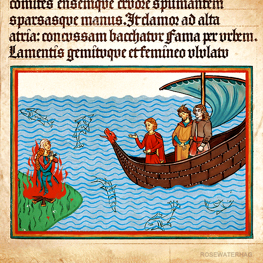
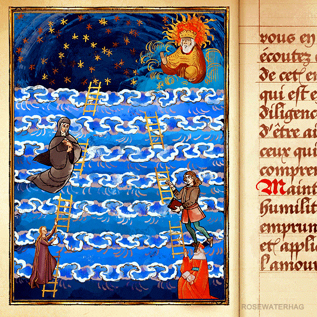
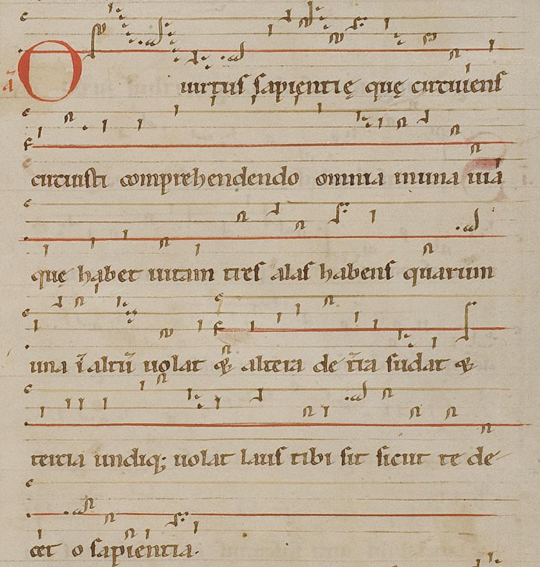
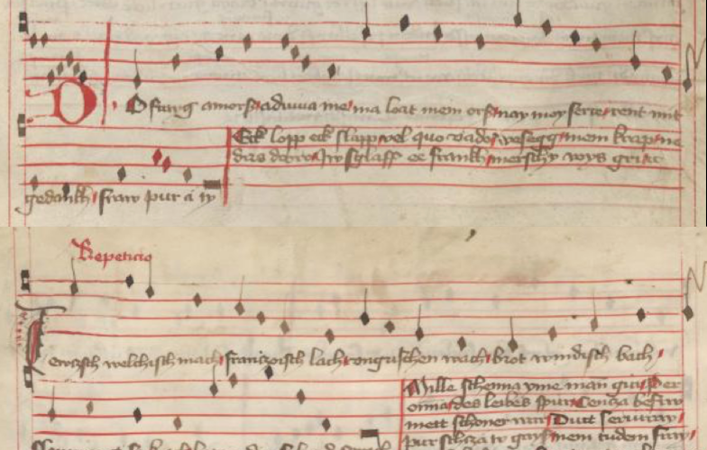
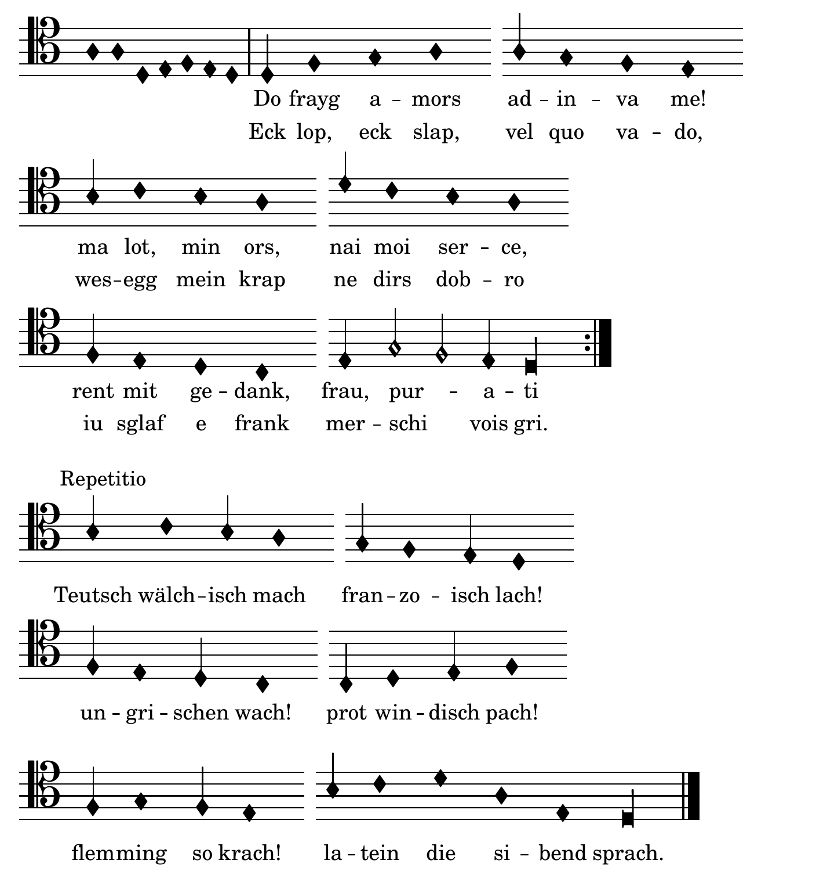

This page is intended for people who have completed Pentiment. If you haven't, I suggest playing/finishing the game first before proceeding—it is wonderful!
My goal for this page is to compile notes on various aspects of Pentiment: I make no claims that any of the information found below is exclusive to this website, nor do I have any pretensions that it is somehow more completely or neatly presented here. Rather, I simply want to collect—and possibly share, if anyone else besides myself ever reads these words—in one place which is convenient for me some information about one of my favorite games.
I highly reccomend that anyone who enjoyed Pentiment watch this wonderful analysis of the game by George (a.k.a. Super Bunnyhop).
"Visible evidence of an alteration to a painting or drawing that suggests a change of mind on the part of the artist. In particular, it refers to previous workings revealed by the change in the refractive index of oil paint that occurs as it ages."
-Jonathan Stephenson[1]
An example of Pentimento in the painting Portrait of the Vendramin Family by Titian: notice the ghost of the bearded man in the sky behind him.[2]
The relationship between the title and the narrative of the game is at once glaringly obvious and, the longer one thinks about it, wonderfully subtle and multi-faceted: a delightful Reddit thread from the Pentiment subreddit outlines several of these connections. One of the most lovely is the town of Tassing itself—as a Christian town built over the ruins of a Roman town build over the ruins of a Pagan town, it is itself a vast piece of interconnected architectural pentimenti.[3]
While the term "pentiment" is usually applied to paintings, the opening of the game seems to suggest a literary analog—the players first action in the game is to erase the text of a manuscript with a pumice stone, beginning the creation process of a palimpsest, or a manuscript that was erased and written on again. This was in fact a common practice in Scriptoria, where parchment was not as readily available as texts to copy.[4]
The Latin text the player erases is a translated selection from Umberto Eco's The Name of the Rose, which can be found in the game's bibliography. Anyone familiar with the plot of Eco's novel will see the aptness of this reference.
Ultimately, Pentiment suggests to us that all art—and by extension all human culture—is just that: pentimento, a new layer on a well-worn surface haunted by the ghostly images of what came before.
The Bibliography
One of the most unique features of Pentiment is the lengthy bibliography which greets the player directly after the credits. This list is available on other websites, such as Reddit and Tumblr; I am recreating it here verbatim, mostly for my own quick reference, and with the edition of some notes and links. By their nature these links are tenuous, so please email me if one gets taken down or privated!
Beach, Alison I. Women as Scribes: Book Production and Monastic Reform in Twelfth-Century Bavaria. Cambridge University Press, 2004.
[This book can be borrowed from the Internet Archive.]
Berger, Jutta Maria. Die Geschichte der Gastfreundschaft im hochmittelalterlichen Mönchtum: die Cistercienser. Akademie Verlag GmbH, 1999.
[Trans. The History of Hospitality in Medieval Monasticism: The Cistercians. The Order of Cistercians, also known as the Bernardines, branched off from the Benedictines in the late 11th century. It can be read through institutional access via De Gruyter.]
Blickle, Peter. The Revolution of 1525. Translated by Thomas A. Brady, Jr. and H.C. Erik Midelfort. The Johns Hopkins University Press, 1985.
[This book can be borrowed from the Internet Archive.]
Brady, Thomas A., Jr. "Imperial Destinies: A New Biography of the Emperor Maximilian I." The Journal of Modern History, vol. 62, no. 2, 1990. pp. 298-314.
[The article cited here is an English-language review for the longer, German-language book: Kaiser Maximilian I: Das Reich, Osterreich und Europa an der Wende zur Neuzeit by Hermann Wiesflecker. Brady's review can be read through institutional access via JSTOR .]
Brandl, Rainer. "Art or Craft? Art and the Artist in Medieval Nuremberg." Gothic and Renaissance Art in Nuremberg 1300-1550. The Metropolitan Museum of Art, 1986.
[This book is out of print, but it can be read and downloaded in its entirety from The Met's website. The cited section from Brandl can be found on pp. 51-60.]
Byars, Jana L., "Prostitutes and Prostitution in Late Medieval Barcelona." Masters Theses. Western Michigan University, 1997.
[This Theses can be found on the Western Michigan University Libraries website.]
Cashion, Debra Taylor. "The Art of Nikolaus Glockendon: Imitation and Originality in the Art of Renaissance Germany." Journal of Historians of Netherlandish Art, vol. 2, no. 1-2, 2010.
[This article can be read and downloaded in its entirety from JHNA's website.]
de Hamel, Christopher. A History of Illuminated Manuscripts. Phaidon Press Limited, 1986.
[This book can be borrowed from the Internet Archive.]
Eco, Umberto. The Name of the Rose. Translated by William Weaver. Mariner Books, 2014.
[A wonderful book, and a must-read for anyone who enjoys Pentiment.The text you erase at the start of the game is the first page of The Name of the Rose in Latin.]
Eco, Umberto. Baudolino. Translated by William Weaver. Boston, Mariner Books, 2003.
Fournier, Jacques. "The Inquisition Records of Jacques Fournier." Translated by Nancy P. Stork. San Jose University, 2020.
[The translation of the records of Jacques Fournier is an on-going project by Nancy P. Stork; the completed translations can currently be read and downloaded from Stork's page on the San José State University website. For more historical context, see the note which precedes these earlier translations. See also the French publication of the records below]
Geary, Patrick. "Humiliation of Saints." In Saints and their cults: studies in religious sociology, folklore, and history. Edited by Stephen Wilson. Cambridge University Press, 1985. pp. 123-140.
[This book can be borrowed from the Internet Archive. Geary's article was originally published in Annales, vol. 34, no. 1, 1979. pp. 27-42 as L'humiliation des saints: that article can be found here.]
Harrington, Joel F. The Faithful Executioner: Life and Death, Honor and Shame in the Turbulent Sixteenth Century. Farrar, Straus and Giroux, 2013.
Hertzka, Gottfried and Wighard Strehlow. Große Hildegard-Apotheke. Christiana-Verlag, 2017.
[Trans. Saint Hildegard's Apothecary. I cannot find anywhere online—legal or otherwise—to obtain a digital copy of this book. It is a compilation of different medicinal remedies, both for body and soul, purported to come from the writings of von Bingen. The author, Gottfried Hertzka, started an entire trend of "Hildegard-Medizin" in 1970s Germany and Austria.]
Hildegard von Bingen. Physica. Edited by Reiner Hildebrandt and Thomas Gloning. De Gruyter, 2010.
[The edition cited is the newest German and Latin critical edition of von Bingen's medical text; it can be read through institutional access via De Gruyter. A Latin edition of the text can be found here; for an English translation, see the Throop citation below.]
Julian of Norwich. Revelations of Divine Love. Translated by Barry Windeatt. Oxford University Press, 2015.
[Norwich's account of her deathbed visions and eventual Revelation survive in two versions: A Short Text, which she wrote immediately after recovering, and a Long Text, the product of years of development while an Anchoress attached to St Julian's, Norwich; Windeatt's edition contains both texts. The book is in English—in fact, it is the oldest known English-language book to be written by a woman; Windeatt's "translation" is out of it's original Middle English. Windeatt's translation is not available for free anywhere online, but there are numerous editions which are, from the original to other modern translations. My personal copy is Grace Warrack's 1901 translation, which I find more than serviceable, though I would like to read Windeatt's.]
Kerr, Julie. Monastic Hospitality: The Benedictines in England, c.1070-c.1250. Boydell Press, 2007.
[This book is available through institutional access via JSTOR.]
Kieckhefer, Richard. Forbidden rites: a necromancer's manual of the fifteenth century. Sutton, 1997.
[An English translation of the fifteen century Liber incantationum, exorcismorum et fascinationum variarum, also called the Munich Manual of Demonic Magic. In an interview, Sawyer also mentions viewing the original manuscript on the website of Munich's Bayerische Staatsbibliothek.[1] Kieckhefer's translation is available from the Internet Archive.]
Kümin, Beat and B. Ann Tlusty, The World of the Tavern: Public Houses in Early Modern Europe. Routledge, 2017.
Ilner, Thomas, et al. The Economy of Dürrnberg-bei-Hallein: An Iron Age Sale-mining Centre in the Austrian Alps. The Antiquaries Journal, vol. 83, 2003. pp. 123-194.
[This article is available through institutional access via the Cambridge University Press.]
Láng, Benedek. Unlocked Books: Manuscripts of Learned Magic in the Medieval Libraries of Central Europe. The Pennsylvania State University Press, 2008.
[This book is available from the Internet Archive.]
Lindeman, Mary. Medicine and Society in Early Modern Europe. Cambridge University Press, 2010.
[This book can be borrowed from the Internet Archive.]
Lowe, Kate. "'Representing' Africa: Ambassadors and Princes from Christian Africa to Renaissance Italy and Portugal, 1402-1608." Transactions of the Royal Historical Society Sixth Series, vol. 17, 2007. pp. 101-128.
[This article is available via the Cambridge University Press.]
Meyers, David. "Ritual, Confession, and Religion in Sixteenth-Century Germany." Archiv für Reformationsgeschichte, vol. 89, 1998. pp. 125-143.
[This article can be read through institutional access via De Gruyter.]
Murat, Zuleika. "Wall paintings through the ages: the medieval period (Italy, twelfth to fifteenth century)." Archaeological and Anthropological Sciences, vol. 12, no. 191, Springer, October 2021. pp. 1-27.
[This article can be read and downloaded from Springer via their open access policy.]
Overty, Joanne Filippone. "The Cost of Doing Scribal Business: Prices of Manuscript Books in England, 1300-1483." Book History 11, 2008. pp. 1-32.
[This article can be read through institutional access via JSTOR.]
Page, Sophie. Magic in the Cloister: Pious Motives, Illicit Interests, and Occult Approaches to the Medieval Universe. The Pennsylvania State University Press, 2013.
Park, Katharine. "The Criminal and the Saintly Body: Autopsy and Dissection in Renaissance Italy." Renaissance Quarterly, vol. 47, no. 1, Spring 1994. pp. 1-33.
[This article can be read through institutional access via JSTOR.]
Rebel, Hermann. Peasant Classes: The Bureaucratization of Property and Family Relations under Early Hapsburg Absolutism, 1511-1636. Princeton University Press, 1983.
[This article can be read through institutional access via JSTOR.]
Rublack, Ulinka. "Pregnancy, Childbirth, and the Female Body in Early Modern Germany." Past & Present, vol. 150, no. 1, February 1996. pp. 84-110.
[This article can be read through institutional access via Oxford Academic.]
Salvadore, Matteo. "The Ethiopian Age of Exploration: Prester John's Discovery of Europe, 1306-1458." Journal of World History, vol. 21, no. 4, 2011. pp. 593-627.
[This article can be read through institutional access via JSTOR.]
Sangster, Alan. "The Earliest Known Treatise on Double Entry Bookkeeping by Marino de Raphaeli" The Accounting Historians Journal, vol. 42, no. 2, 2015. pp. 1-33.
[This article can be read through institutional access via JSTOR.]
Throop, Priscilla. Hildegarde von Bingen's Physica: The Complete English Translation of Her Classic Work on Health and Healing. Healing Arts Press, 1998.
[This book can be borrowed from the Internet Archive.]
Usher, Abbot Payson. "The Origins of Banking: The Primitive Bank of Deposit, 1200-1600." The Economic History Review, vol. 4, no. 4, 1934. pp. 399-428.
[This article can be read through institutional access via JSTOR.]
Waldman, Louis A. "Commissioning Art in Florence for Matthias Corvinus: The Painter and Agent Alexander Formoser and his Sons, Jacopo and Raffaello del Tedesco." Italy and Hungary: Humanism and Art in the Early Renaissance. Edited by Péter Farbaky and Louis A. Waldmann, Villa I Tatti, 2011. pp. 427-501.
[This article can be found through Academia.edu.]
Wendt, Ulrich. Kultur und Jagd: ein Birschgang durch die Geschichte. G. Reimer, 1907.
[Trans. Culture and Hunting: A Stalk through History. Could also be read as "Civilization" and Hunting; "Birschgang"—or "Pirschgang"—means to stalk the way a hunter does their prey. It can be borrowed from the Internet Archive.]
Whelan, Mark. "Taxes, Wagenburgs and a Nightingale: The Imperial Abbey of Ellwangen and the Hussite Wars, 1427-1435." The Journal of Ecclesiastical History, vol. 72, no. 4, 2021, pp. 751-777.
[This article is available to read via the Cambridge University Press.]
Wiesner-Hanks, Merry E. Women and Gender in Early Modern Europe. Cambridge University Press, 2008.
[This book can be borrowed from the Internet Archive.]
Yardeni, Ada. The Book of Hebrew Script: History, Paleography, Script Styles, Calligraphy & Design. Tyndale House Publishers, 2010.
[This book can be borrowed from the Internet Archive.]

Additional Books
In addition to the bibliography, game director Josh Sawyer has mentioned several dozen other books which inspired Pentiment:
Anderson, John L. A Fifteenth Century Cookry Boke. Charles Scribner's Sons, 1962.
[This book can be borrowed from the Internet Archive.]
Aquinas, St. Thomas. Summa Theologica. Translated by The Fathers of the English Dominican Province. Benziger Bros., 1947.
[There are numerous translation of Summa Theologica. See this version online for an easy to navigate edition.]
Bartlett, Robert The Medieval World Complete. Thames & Hudson, 2014.
Baylor, Michael. The German Reformation and the Peasants' War: A Brief History with Documents. Bedford/St. Martin's, 2012.
Beaufort, Christian and Matthias Pfaffenbichler. Meisterwerke der Hofjagd- und Rüstkammer. Kunsthistorisches Museum Wien, 2005.
[Trans. Masterworks from the Royal Collection of Arms and Armour. This book presents objects from the famous weapons collection of the Kunsthistorisches Musuem in Vienna, one of the largest collections in the world.]
Black, Winston. Medicine and Healing in the Premodern West: A History in Documents. Broadview Press, 2019.
Bornstein, Daniel E. Dino Compagni's Chronicle of Florence. University of Pennsylvania Press, 1986.
Braudel, Fernand. Civilization And Capitalism 15th-18th Century. 3 vols. Harper & Row, 1979.
[This book can be borrowed from the Internet Archive.]
Braun, Georg and Franz Hogenberg. Cities of the World. Taschen, 2015.
[This book can be borrowed from the Internet Archive.]
Brown, Michelle P. et al. Understanding Illuminated Manuscripts: A Guide to Technical Terms. Getty Publications, 2018.
Butts, Barbara et al. Painting on Light: Drawings and Stained Glass in the Age of Durer and Holbein. Getty Publications, 2000.
[This book can be borrowed from the Internet Archive.]
Camille, Michael. Image on the Edge: The Margins of Medieval Art. Reaktion Books, 2019.
[This book can be borrowed from the Internet Archive.]
Camporesi, Piero. Bread of Dreams: Food and Fantasy in Early Modern Europe. Translated by David Gentilcore. University of Chicago Press, 1996.
Champion, Matthew. Medieval Graffiti: The Lost Voices of England's Churches. Ebury Press, 2015.
Chubb, George Hayter. Protection From Fire and Thieves: Including the Construction of Locks, Safes, Strong-Rooms, and Fireproof Buildings. Longmans, Green, and Co., 1875.
[This book can be read via Project Gutenberg.]
Clemens, Raymond and Timothy Graham. Introduction to Manuscript Studies. Cornell University Press, 2008.
Davis, Natalie Zemon. The Return of Martin Guerre. Harvard University Press, 1983.
[The story of the character Martin in Pentiment is taken almost directly from this historical court case. Sawyer also reccomends the movie version.]
de Hamel, Christopher. Meetings with Remarkable Manuscripts: Twelve Journeys into the Medieval World. Penguin Press, 2017.
Delumeau, Jean La civilisation de la Renaissance. Flammarion, 1984.
Dürer, Albrecht. Records of Journeys to Venice and the Low Countries. Trans. by Rudolf Tombo. Merrymount Press, 1913.
[This book can be read via Project Gutenberg.]
Duvernoy, Jean. Le Registre d'inquisition de Jacques Fournier. De Gruyter Mouton, 1978.
[Trans. The Inquisition Register of Jacques Fournier. You can read this book here. See also Nancy P. Stork's translations, listed above.]
Esler, Philip F. Ethiopian Christianity: History, Theology, Practice. Baylor University Press, 2021.
Everett, Nicholas. The Alphabet of Galen: Pharmacy from Antiquity to the Middle Ages. University of Toronto Press, 2012.
Firnhaber-Baker, Justine. The Jacquerie of 1358: A French Peasants' Revolt. Oxford University Press, 2021.
Foister, Susan and Peter van den Brink. Dürer’s Journeys: Travels of a Renaissance Artist. National Gallery London, 2021.
Gibson, Michael Francis. The Mill and the Cross: Peter Bruegel's Way to Calvary. University of Levana Press, 2012.
[This book can be borrowed from the Internet Archive.]
Ginzburg, Carlo. The Cheese and the Worms: The Cosmos of a Sixteenth-Century Miller. Johns Hopkins University Press, 1992.
[This book can be borrowed from the Internet Archive.]
Hahn, Cynthia. The Reliquary Effect: Enshrining the Sacred Object. Reaktion Books, 2017.
Holbein, Hans and Ulinka Rublack. The Dance of Death. Penguin Classics, 2017.
[This book can be read via Project Gutenberg.]
Holt, Thomas et al. Welt aus Eisen: Waffen und Rstungen aus dem Zeughaus in Graz. Springer-Wien, 1998.
[Trans. World of Iron: Weapons and Armor from the Armory in Graz.]
Jotischky, Andrew and Caroline Hull. The Penguin Historical Atlas of the Medieval World. Penguin Books, 2005.
[This book can be read via Internet Archive.]
Kempf, Damien and Maria L. Gilbert. Medieval Monsters. British Library, 2015.
Kerr, Julie. Monastic Hospitality: The Benedictines in England, c.1070–c.1250. Boydell & Brewer, 2012.
Le Roy Ladurie, Emmanuel. Montaillou: Cathars and Catholics in a French village, 1294-1324. Scolar, 1978.
[This book can be borrowed from the Internet Archive.]
McNeill, John and Richard Plant Romanesque Saints, Shrines and Pilgrimage. Routledge, 2020.
Miller, Douglas. Armies of the German Peasants' War 1524–26. Osprey Publishing, 2003.
Miller, Douglas. The Swiss at War 1300–1500. Osprey Publishing, 1979.
Nicholson, Helen J. and Jochen Burgtorf. International Mobility in the Military Orders: Travelling on Christ's Business. University of Wales Press, 2006.
Nummedal, Tara. Alchemy and Authority in the Holy Roman Empire. University of Chicago Press, 2007.
Rafnsson, Magnús. Angurgapi: The Witch-hunts in Iceland. Strandagaldur, 2003.
Robb, David M. The Art of the Illuminated Manuscript. A.S. Barnes, 1973.
[This book can be borrowed from the Internet Archive.]
Robertson, Duncan. Lectio Divina: The Medieval Experience of Reading. Cistercian Publications, 2011.
Roob, Alexander. Alchemy & Mysticism : the Hermetic Museum. Taschen, 1997.
[This book can be borrowed from the Internet Archive.]
Schwarzer, Elke. Heimische Pflanzen für den Garten. Verlag Eugen Ulmer, 2016.
[Trans. Native Plants for the Garden.]
Skuggi, (Jochum Magnús Eggertsson). Sorcerer's Screed: The Icelandic Book of Magic Spells. Translated by Philip Roughton. The Icelandic Magic Company, 2015.
Talhoffer, Hans. Talhoffers Fechtbuch - Gerichtliche und andere Zweikämpfe darstellend. VS-Books.
[This book can be borrowed from the Internet Archive.]
Tentler, Thomas N. Sin and Confession on the Eve of the Reformation. Princeton University Press, 2015.
Walther, Ingo F. and Norbert Wolf. Codices Illustres: The World's Most Famous Illuminated Manuscripts 400 to 1600. Taschen America, 2014.
[This book can be borrowed from the Internet Archive.]
Wunderli, Richard. Peasant Fires: The Drummer of Niklashausen. Indiana University Press, 1992.
[This book can be borrowed from the Internet Archive.]
Zabinski, Grzegorz and Bartlomiej Walczak. Codex Wallerstein: A Medieval Fighting Book from the Fifteenth Century on the Longsword, Falchion, Dagger, and Wrestling. Paladin, 2002.

Texts Mentioned In-Game
In addition to the bibliography, there are numerous texts mentioned throughout the game. I have listed below all that I have come across while playing. If you notice any that I have missed please let me know!
Picatrix (in Arabic Ghāyat al-Ḥakīm, "The Aim of the Sage:" an Arabic book on magic and astrology. Most likely written in the 11th century, the Picatrix synthesized earlier Arabic texts on magic, astrology, astronomy, and the occult. The work was translated into Spanish some time in the mid 1200s, and from there to Latin; it would go on to greatly influence Western European Esotericism. Andreas has a copy, lent to him by Prior Ferenc, in his room at the Gertners' house. That Ferenc has read the Picatrix and wishes to discuss it, along with the Key of Solomon and the Heptameron, is an early clue of his occult predilections.
A critical Latin version, edited by David Pingree, is available to read online. The most authoritative English translation seems to be that of Dan Attrell and David Porreca, published by Penn State University Press. An English translation by John Michael Greer and Christoper Warnock can be read via Internet Archive.
Trans. O Wisdom’s energy;[1] Hildegard von Bingen was a German Benedictine abbess, visionary, writer, and composer. Born into nobility, at the age of 14 she entered into a "stone cell" at a local Benedictine monastery. Among her many extant writings—whose topics range from records of visions and correspondance with Popes to treatises on medicine and the Natural Sciences—she is notable for her poetry, which has surived with its accompanying monophonic music.[2] "The figure of Sapientia (Divine Wisdom), personified at several points in some of the Old Testament’s more poetical books (e.g. Proverbs 8-9, Ecclesiasticus/Sirach 24, and Wisdom of Solomon 7-8), is one of Hildegard’s most constant visionary companions."[3]
Listen:
A traditional performance by the early music ensemble Sequentia; from the 1985 album Hildegard Von Bingen: Geistliche Gesänge.
An arrangement for string quartet performed by the Kronos Quartet; from the 1997 album Early Music.
A more experimental arrangement by Anna-Maria Hefele; from the Canticles of Now project.

O virtus sapientie in neume notation; from the Wiesbaden Codex (also called the Riesencodex), one of the two main notated sources for Hildegard's work.[4] O virtus sapientie in modern notation; transcribed by Beverly R. Lomer and engraved by me. [5]
Title Sequence
"Do fraig amors" by Oswald von Wolkenstein (c.1377–1445), arranged by Alkemie
Trans. Oh, my true beloved;[6] Oswald von Wolkenstein was a South Tyrolean poet and diplomat. Born into a noble family, Wolkenstein spent much of his life travelling, and was well connected with both Church and secular authorities. The majority of Wolkenstein's songs were collected in two large-format collections during his lifetime, and possibly under his supervision.[7] Do fraig amors is a particularly complicated poem due to its complex layering of multiple languages. It pulls from, in no particular order: German, French, Latin, Hungarian, Flemish, Slovenian, and Italian.[8]
Listen:
An arrangement of the piece for vocal ensemble by Marc Lewon.; performed by the Ensemble Leones on their 2014 album The Cosmopolitan: Songs by Oswald von Wolkenstein.
A delightful performance by Ernst Stolz on a portative organ.
A traditional performance by the early music ensemble Sequentia; from the 1993 album Liebeslieder im Mittelalter/Love Songs In The Middle Ages.

Do fraig amors in mensural notation; from Wolkenstein manuscript A [A-Wn 2777]; Sammelhandschrift mit geistlichen und weltlichen Liedern.[9]

Do fraig amors in modernized mensural notation; engraved by me, based on Oswald Koller's work for the 1959 Akademische Druck- u. Verlagsanstaltedition publication of Wolkenstein's work.[10]
City of Reason
"Ich stund an einem morgen/Fortuna desperata" by Ludwig Senfl (c.1486–1543), arranged by Alkemie
Trans. I was standing one morning/Desperate Fate;[11] Ludwig Senfl was a Swiss composer, singer, and copyist. He sang and composed in the court of Maximilian I under his mentor Heinrich Isaac and later, after Isaac's death, served as unofficial court composer. After Maximilian's death he worked in the ducal court of Wilhelm IV, Duke of Bavaria. Senfl's compositional output comprises all genres of his time, including Masses, motets, and secular lieder. [12] Ich stund an einem morgen/Fortuna desperata is a bilingual lieder for 5 musicians. The piece sees Senfl stretching his contrapuntal legs, as two cantus firmi sing dramatically elongated versions of popular tunes (in German and Italian) while three aditional lines fill out the texture.
Rüdeger's Rehearsal
"Victimae pascah laudes" (attributed to Wipo of Burgundy, c. 11th century)
Piero's Pride
adaptation of "Fortuna desperata" by Antoine Busnoys (c.1430–1492), by Alkemie
[3] I would recccomend anyone who finds the concept if "architectual pentimenti" to play the game The Forgotten City. While not quite as tightly tuned as Pentiment, it does touch on some of the same themes.
[4] In actuality, pumice stones were not usually used to erase text. The more common, gentler methods used by scribes has allowed some of the erased text on palimpsests to be recovered, as outlined in this fascinating article.
The Bibliography
[1] Sawyer mentions the Bayerische Staatsbibliothek in this interview.
The Soundtrack
Title Screen
[1] virtus could also be translated as power; see the comment section of the Hildegard Society page on this piece for compelling arguments supporting both renderings.
The full antiphon is as follows:
O virtus Sapientie,
O Wisdom’s energy!
que circuiens circuisti,
Whirling, you encircle
comprehendendo omnia
and everything embrace
in una via que habet vitam,
in the single way of life.
tres alas habens,
Three wings you have:
quarum una in altum volat
one soars above into the heights,
et altera de terra sudat
one from the earth exudes,
et tercia undique volat.
and all about now flies the third.
Laus tibi sit, sicut te decet, O Sapientia.
Praise be to you, as is your due, O Wisdom.
Latin collated from the transcription of Beverly Lomer and the edition of Barbara Newman; translation by Nathaniel M. Campbell.
[2] Bent, Ian D., and Marianne Pfau. "Hildegard of Bingen." Grove Music Online. 2001,
Grove Music Online
[3] Quoted from the Commentary and Notes by Nathaniel M. Campbell and Beverly Lomer, on the
Hildegard Society's webpage for O virtus Sapientie.
[5] This engraving is based on the transcription by Beverly Lomer available on the
Hildegard Society's webpage for O virtus Sapientie. I engraved it again so it would fit on one page.
Title Sequence
[6] The multilingual nature of Do fraigs amors presents obvious difficulties for the translator. In the fascinating article Oswald Von Wolkenstein's Multilingual Songs in European Context: Theory and Practice, David Murray translates the title as "O true love in French, with a heavy Tyrolean accent."
The first verse is as follows, in the original language, modernized German, and English:
Do fraig amors,
Ach meine aufrichtige Geliebte,
Oh, my true beloved,
adiuva me!
steh mir bei!
assist me!
ma lot, mein ors,
Mein Pferd, mein Ross
My horse, my steed,
na moi sercce,
und auch mein Herz
and also my heart
rennt mit gedanck,
streben,
aspire only
frau, puräti.
Herrin, nur zu dir.
mistress, toward you.
Eck lopp, ick slapp,
Wenn ich eile, schlafe,
Wherever I run around, sleep,
vel quo vado,
egal, wo ich bin –
or walk,
wesegg mein krap
es hält mich fürwahr mein Anker
my anchor truly
ne dirs dobro.
nicht fest.
never hold me tightly.
iu gslaff ee franck
Gefangen, doch einst frei
Now a prisoner, but once a free man,
merschi vois gri.
flehe ich dich an.
I plead to you.
Teutsch, welchisch mach!
Mach’s Deutsch, Italienisch,
Switch from German to Italian,
franzoisch wach!
französisch erweck es,
soften up [the heart] in French,
ungrischen lach!
lach auf Ungarisch,
laugh in Hungarian,
brot windisch bach!
back Brot auf slowenisch,
bake bread in Slovenian
flemming so krach!
lass es dann flämisch ertösen!
then sing a song in Flemish!
latein die sibend sprach.
Die siebte Sprache ist Latein.
The seventh language is Latin.
Modernized German translation from Hofmeister, Wernfried. Oswald von Wolkenstein – Das poetische Werk. Gesamtübersetzung in neuhochdeutsche Prosa mit
Übersetzungskommentaren und Textbibliographien von Wernfried Hofmeister, Berlin/New York (Walter de Gruyter) 2011.
English translation from Classen, Albrecht. The Poems of Oswald Von Wolkenstein: An English Translation of the Complete Works (1376/77–1445). Palgrave Macmillan, 2009.
[7] Welker, Lorenz. "Oswald von Wolkenstein." Grove Music Online. 2001,
Grove Music Online.
[8] Murray, David. "Oswald Von Wolkenstein's Multilingual Songs in European Context: Theory and Practice". German Life and Letters. Vol. 66, no. 4. Octoer, 2013.
[9] Cropped images from of pp. 65-6; A-Wn 2777; Sammelhandschrift mit geistlichen und weltlichen Liedern; Sammlung von Handschriften und alten Drucken (HAN) Sammlung von Handschriften und alten Drucken (HAN-MAG) Signatur: Cod. 2777; Tirol: 1422-1441.
Held by the Österreichische Nationalbibliothek in Vienna,
https://search.onb.ac.at/permalink/f/sb7jht/ONB_alma21303532880003338
[10] This engraving is based on Oswald Koller's work in the Akademische Druck- u. Verlagsanstaltedition publication Oswald Von Wolkenstein: Geistliche und Weltliche Lieder, Ein- und Mehrstimmig. Graz, 1959 (though I believe the engraving was done in 1902). Do fraig amors is the 13th melody in the second part, p. 144.
City of Reason
[11] The lieder interweaves the German folksong Ich stuend an einem Morgen with the Italian Fortuna derperata—Senfl wrote multiple settings of both.
The first verse of Ich stuend an einem Morgen, as printed in Ludwig Senfl: Samtliche Werk Band IV, Deutsche Lieder, pp 12-3:
Ich steund an einem Morgen
O Wisdom’s energy!
heimlich an einem Ort,
Whirling, you encircle
da hätt' ich mich verborgen,
and everything embrace
ich hört klägliche Wort
in the single way of life.
von einem Fräulein hübsch und fein,
Three wings you have:
das stuend bei seinem Buehlen:
one soars above into the heights,
Es mueßt gescheiden sein.
one from the earth exudes,
[12] Gasch, Stefan, and Sonja Tröster. "Senfl [Sennfl, Senffel, Senfftl, Sennfl, Sennfli, Senfelius, Senphlius], Ludwig." Grove Music Online. 2001, Grove Music Online.